Região Do Norte
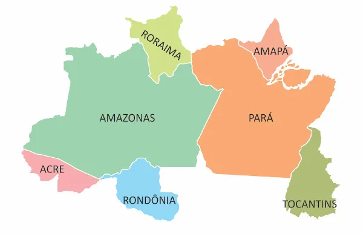
Estados
| Estados | Capitais | Gentílicos |
|---|---|---|
| Acre | Rio Branco | Acriano |
| Amapá | Macapá | Amapaense |
| Amazonas | Manaus | Amazonense |
| Pará | Belém | Paraense |
| Rondônia | Porto Velho | Rondoniense |
| Roraima | Boa Vista | Roraimense |
| Tocantins | Palmas | Tocantinense |
Breve Histórico do Norte
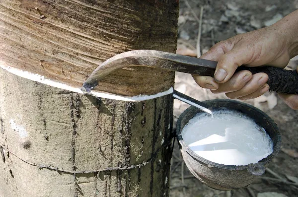
No século XVIII, houve dois tipos de ocupações: as religiosas, para catequização dos nativos, e as militares, para defender o território nacional.
Já nos séculos XIX e XX, novas moradias começaram a surgir por motivos econômicos e sociais, devido à exploração da borracha, no interior da Amazônia, e com a imigração japonesa, concentrada no estado do Pará.
Clima da Região
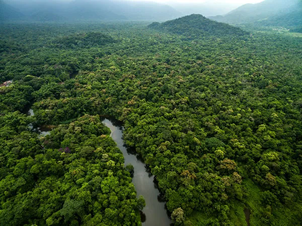
O clima equatorial é presente em todos os estados, exceto em algumas áreas do Tocantins, Pará e Roraima. Bastante quente e chuvoso, esse clima permite-nos dizer que não há inverno como nas outras regiões do Brasil. Já o clima tropical continental, encontrado nos trechos em que o equatorial não alcança, tem duas características bem definidas: um inverno seco e um verão chuvoso.
Hidrografia da Região
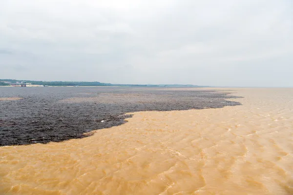
A primeira corresponde a 45% do território brasileiro e banha os seguintes estados: Amazonas, Acre, Amapá, Pará, Rondônia e Roraima e o estado do Mato Grosso, no Centro-Oeste.
O rio da dá nome à bacia, o rio Amazonas é o maior da região e do mundo em volume de água, o que mostra sua grande importância para todos que estão ao seu redor. Esse rio nasce nas montanhas do Peru e deságua no Pará, atingindo o oceano Atlântico.
Quando entra em território brasileiro, o rio Amazonas recebe o nome de rio Solimões. Quando ele se encontra com o rio Negro, forma uma paisagem magnífica devido ao contraste das águas. Após esse encontro, volta a ser chamado de Amazonas.
Vegetação da Região
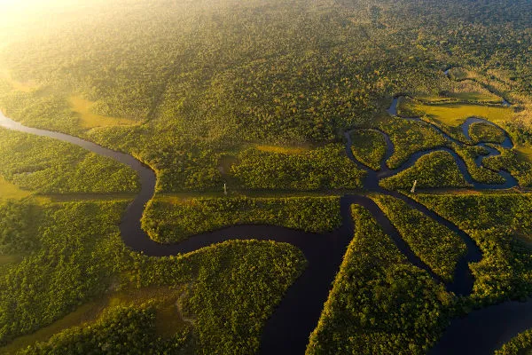
Podemos citar algumas características dessa floresta:
variadas plantas;
espécies adaptadas ao clima úmido (higrófila);
árvores com folhas latifoliadas, isto é, grandes e largas;
tamanhos variados das árvores, que podem atingir mais de 30 m de altura;
árvores muito próximas, o que garante uma vegetação fechada;
riqueza de matéria-prima, como madeira, piaçava e plantas medicinais.
Economia da Região
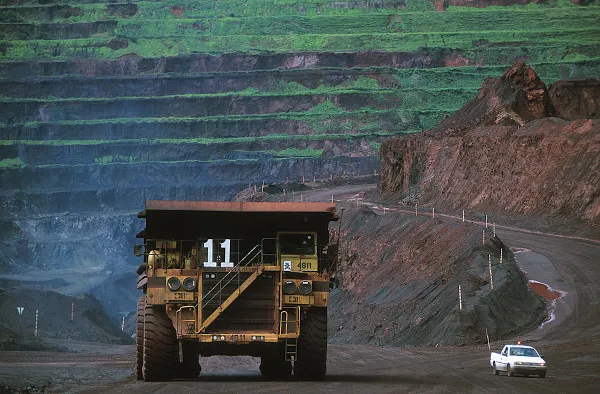
Esta última corresponde a um grande polo industrial, idealizado em 1967 e localizado em Manaus, que abriga grandes multinacionais, propiciando um enorme desenvolvimento industrial e geração de empregos para a região.
Esse polo concentra três tipos de atividades: comercial, agropecuária e industrial (a mais forte de todas). De acordo com a Suframa, existem mais de 600 indústrias no polo e uma geração de mais de 500 mil empregos, diretos e indiretos. As áreas de produção industrial que se destacam são: eletroeletrônicos (celulares, TVs), duas rodas (motocicletas) e química (produção de matéria-prima para refrigerante). Além disso, coexistem com esse desenvolvimento industrial as atividades econômicas naturais, como agricultura, pecuária e extrativismo vegetal e mineral.
Na agricultura, podemos citar a produção de pimenta do reino, iniciada com os japoneses no início do século passado; e o cultivo da juta, uma espécie de árvore plantada na beira dos rios de que é extraída uma fibra vegetal utilizada na produção de tapetes e cordas. Além desses produtos, a região Norte é a maior produtora de fibras do país, sendo a juta e a malva plantas importantíssimas nesse processo.
Já a pecuária é desenvolvida de forma extensiva, com destaque para a pecuária bovina e a criação de búfalos. Esta última está concentrada no estado do Pará, em áreas alagadas, e corresponde a 68% da produção nacional.
Os extrativismos vegetal e mineral representam uma importante fonte de renda para a população local. No extrativismo vegetal, a força da extração de madeira está nos estados do Pará e do Amazonas. É produzida na região Norte uma grande variedade de palmito, açaí e outros vegetais das árvores locais.
A borracha ainda está presente nas atividades extrativistas, mas não com a força do início do século XX, pois vem perdendo espaço para a agropecuária. Além disso, a biodiversidade da floresta amazônica atrai a indústria farmacêutica na busca de medicamentos e plantas medicinais, além de oferecer cosméticos para a indústria da beleza.
A extração mineral iniciou-se ainda na década de 1950 como estratégia de povoamento da região pelo Governo Federal da época. Dentre os minérios encontrados na região Norte, podemos destacar:
manganês, no Amapá;
cassiterita, em Rondônia;
ferro, no Pará;
bauxita, no Pará;
níquel, no Pará.
ouro, em vários estados, mas com ênfase no Amazonas e no Pará.
O extrativismo mineral na região Norte é uma das bases econômicas de muitos estados, como o Pará. Nesse estado, temos a presença de ferro, na Serra dos Carajás, e do ouro, na Serra Pelada. Esta última área atraiu uma grande quantidade de garimpeiros na década de 1980, acelerando o desmatamento e a poluição nela.
Demografia da Regiao
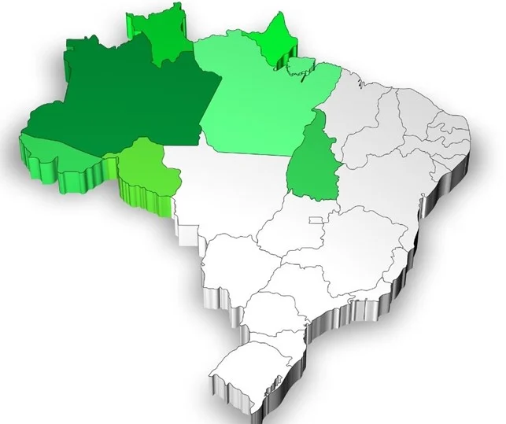
A partir de 1970, minérios foram descobertos, garimpos surgiram e o desmatamento foi intensificado pela agropecuária. Esses fatores geraram uma migração em massa para a região, que atualmente é a segunda em termos de taxa de crescimento demográfico, sendo a primeira a região Centro-Oeste.
De acordo com os dados do IBGE de 2019, a região Norte conta com pouco mais de 18 milhões de habitantes, porém sua população está mal distribuída. Por exemplo: o estado do Amazonas, maior da região, possui uma densidade demográfica de 2,23 hab/km², sendo essa a segunda menor da região, a menor está no estado de Roraima. Esses últimos dados são do IBGE, de 2010. Belém, capital do Pará, possui uma densidade demográfica de 1315 hab/km², dados do IBGE de 2010, o que reforça a desigualdade demográfica da região.
Vários fatores podem explicar essa distribuição irregular de pessoas, mas vamos citar apenas dois: o primeiro é a vegetação. Grande parte da região é ocupada pela Floresta Amazônica, o que impede algumas áreas de serem ocupadas. O segundo fator é a presença da população ribeirinha, que vive na beira dos rios, ao longo de suas margens.
Cultura da Regiao
As duas festas mais populares da região ocorrem em junho, no estado do Amazonas, e no segundo domingo de outubro, no Pará. Em junho temos o Festival de Parintins. Esse festival reúne o evento do boi-bumbá e é marcado pela disputa artística do Boi Caprichoso, na cor azul, e do Boi Garantido, na cor vermelha. São três dias de festas, com várias apresentações das populações locais, carimbó e muita diversão.
No Pará, em outubro, temos o Círio de Nazaré, uma procissão religiosa católica na cidade de Belém em homenagem a Nossa Senhora de Nazaré. Essa procissão reúne católicos do mundo todo, sendo um dos eventos mais importantes para o catolicismo brasileiro.
Acre
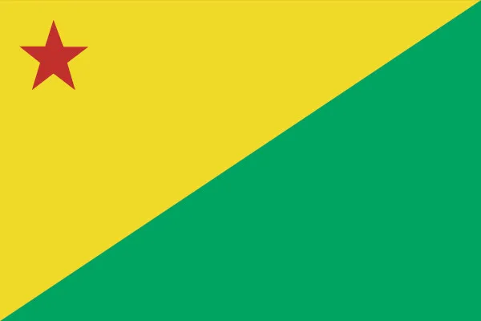
O Acre é um dos 27 estados brasileiros, tendo sido elevado a essa condição no ano de 1962. Antes de ser anexado ao Brasil, ele pertencia à Bolívia e ao Peru. Localiza-se na Região Norte, no bioma Amazônia, e o clima predominante é o equatorial úmido.
O estado é um grande exportador de castanha-do-pará e madeira, além de ser o principal produtor de borracha do país.
Amapá
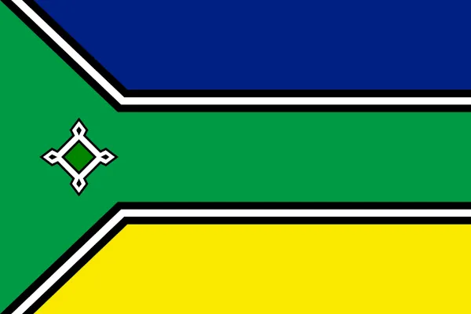
O Amapá é um dos estados do Brasil e situa-se no extremo norte do território. Integra a Região Norte, onde faz divisa com o Pará e com dois países: Guiana Francesa e Suriname. O clima amapaense é o equatorial úmido, e sua cobertura vegetal é formada por florestas, vegetação litorânea e algumas áreas de cerrado. O estado possui uma vasta rede fluvial, o que proporciona a utilização dos rios como vias de transporte.
Amazonas
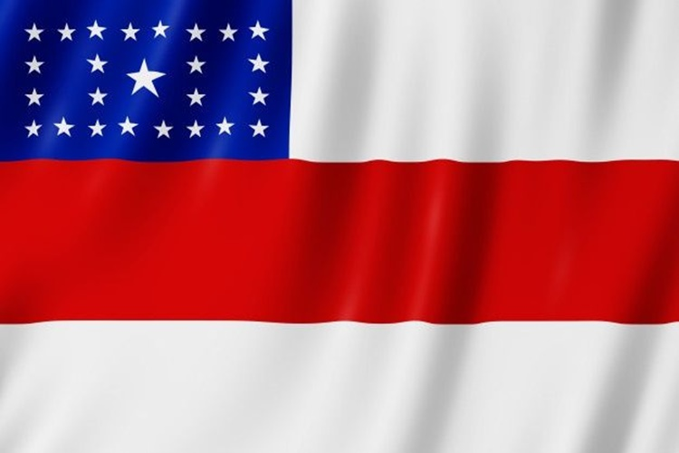
O estado do Amazonas pertence à região Norte do Brasil, sendo o maior em território, com uma população de 4,2 milhões de habitantes. Tem na sua capital, Manaus, a principal cidade e aglomeração urbana do estado. O estado apresenta dinâmica econômica voltada aos setores secundário e terciário, com destaque para os serviços e a indústria, que somam juntos mais de 80% do seu PIB.
Pará
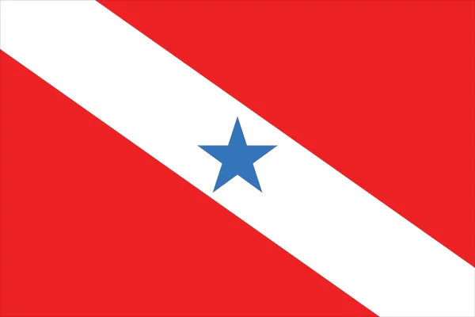
Pará é o segundo maior estado da região Norte do Brasil, concentrando quase a metade de sua população. Possui relevo pouco acidentado e situa-se inteiramente na Amazônia.
Rondônia
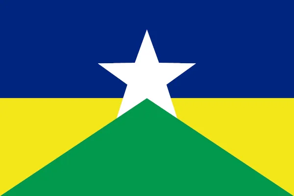
Rondônia é um estado brasileiro da região Norte. É composto por planícies em sua maioria, e consiste atualmente em uma das áreas de expansão da fronteira agrícola brasileira.
Roraima
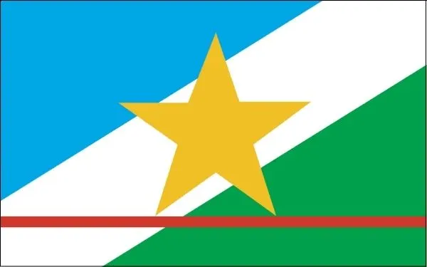
Roraima é o estado mais setentrional do território brasileiro. Sua população é a menor do país, concentrando-se na capital. O estado é um grande produtor de arroz e soja.
Tocantins
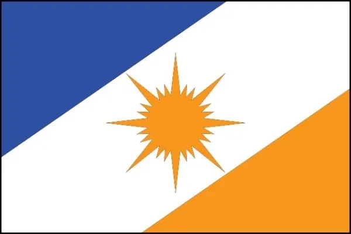
O Tocantins foi o último estado brasileiro a ser criado, tendo sido estabelecido no ano de 1988. Está localizado na Região Norte do país e conta com 1,5 milhão de habitantes.